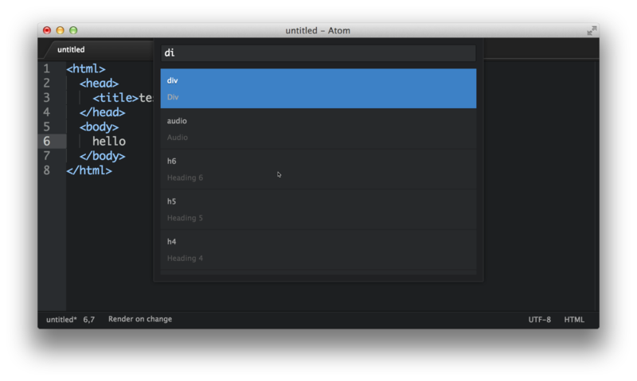
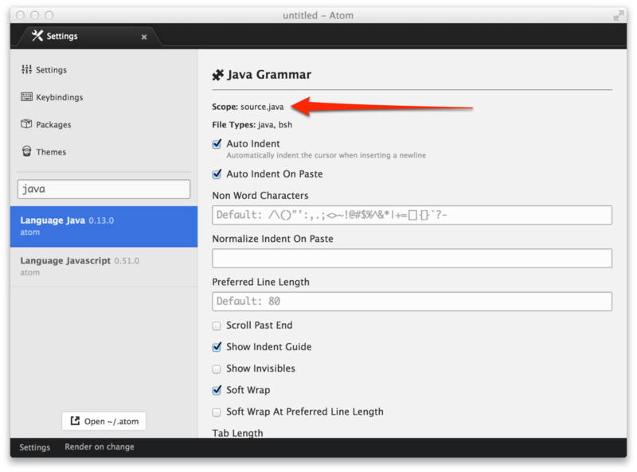

代码段¶
代码段是一个非常有效的工具，可以从一个快捷方式中快速生成常用的代码语法。
这就是说，你可以输入一些类似于habtm的东西，然后按下回车键，他就会扩展为has_and_belongs_to_many。
许多包自带他们自己的，具有特定模式的代码段。比如，提供了html语法高亮和语法的language-html包提供了许多代码段，来创建一些你想使用的不同HTML标签。如果你在Atom中创建一个新的HTML文件，你可以输入html然后按下tab，它会扩展为：
<html>
<head>
<title></title>
</head>
<body>
</body>
</html>同时它会把光标放在title标签的中间，以便你立即开始填充这个标签。许多代码段具有多个焦点位置，你可以按下tab在他们之间切换 —— 比如，在这个HTML代码段之中，你填充完标题标签之后，可以按下tab键，然后光标就会移动到body标签之间。
要查看当前打开文件拥有的所有代码段，你可以按下alt-shift-S。

你也可以在选择输入框中输入内容，来使用模糊搜索过滤这个列表。选择其中一个之后会执行光标所在的代码段（或者多个光标所在的代码段）。
创建你自己的代码段¶
所以说这样太爽了。但是，如果语言包中没有包含一些东西，或者你的代码中要编写一些自定义的东西，那会怎么样呢？很幸运的是，你可以非常便利地添加自己的代码段。
在你~/.atom目录下的snippets.cson文件，存放了你的所有自定义的代码段，他们会在Atom运行时加载。但是，你也可以通过Atom > Open Your Snippets菜单，轻易打开这个文件。
代码段的格式¶
现在让我们看一看如何编写代码段，基本的代码段格式像这个样子：
'.source.js':
'console.log':
'prefix': 'log'
'body': 'console.log(${1:"crash"});$2'最外面的键是选择器，即在哪里会加载代码段。决定它应该是什么的最简单的方法，是访问你想要添加代码段的语言的语言包，并找到“Scope”字符串。
例如，你想要添加在Java文件中工作的代码段，我们应该先在我们的设置视图中寻找language-java包，然后我们看到了Scope是“source.java”，代码段最顶层的键就应该是它前面加上一个点（就像CSS选择器那样）。

下一层的键是代码段的名字，用于在代码段菜单中，以一个更具可读性的方式来描述代码段。通常来说，这里最好使用对人来说具有可读性的字符串。
在每个代码段的名字下面是prefix，用于触发代码段，以及body，当代码段被触发后用于插入。
每个后面带有数字的$是tab的停止位置。在代码段被触发之后，通过按下tab键来遍历它们。
上面的例子向Javascript文件添加了log代码段，它会被扩展为：
console.log("crash");其中的"crash"字符串会在开始时被选中，再次按下tab键之后，光标会移动到分号之后。
并不像CSS选择器，代码段的键每层只能重复一次。如果某一层有重复的键，只有最后的那个会被读到，详见配置CSON。
多行代码段主体¶
对于长一些的模板，你可以使用"""来使用多行语法。
'.source.js':
'if, else if, else':
'prefix': 'ieie'
'body': """
if (${1:true}) {
$2
} else if (${3:false}) {
$4
} else {
$5
}
"""像你可能期待的那样，这是一个创建代码段的代码段。如果你打开一个代码段文件，输入snip之后按下tab，会将以下内容插入到文件中：
'.source.js':
'Snippet Name':
'prefix': 'hello'
'body': 'Hello World!'砰的一下，就把那个东西填充了，然后得到了一个代码段。只要你保存了文件，Atom就会重新加载它，你也就能立即使用它了。
代码段功能在atom/snippets包中实现。
更多例子请见language-html中的代码段，和language-javascript包。